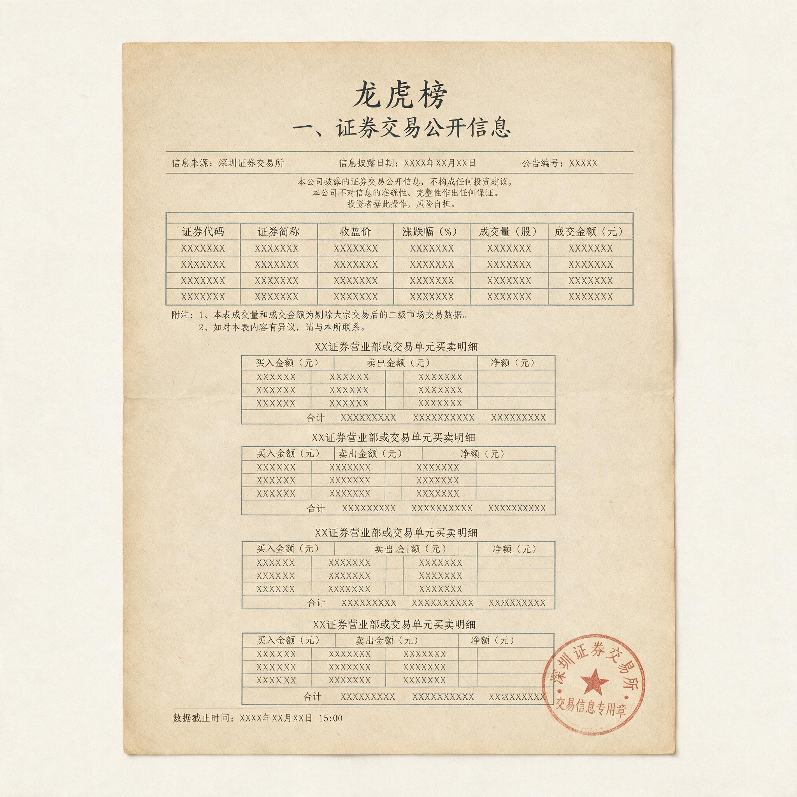

第 1 章
龙虎榜上的幸存者
龙虎榜文件在下午四点半准时刷新。那是一份深交所网站上跳出的PDF，文件名是一串数字编码，格式二十年来几乎没有变过。买入金额最大的前五名，卖出金额最大的前五名，席位名称，买入金额，卖出金额，净买入。表格的排版密度很高，像是用打印机打出来的，没有任何视觉设计可言。
但每一个短线交易者都知道，这份表格在收盘后的那几分钟里，是这个市场上被阅读得最仔细的文本。某只股票当日涨停，封单超过十二万手。榜单前三行，一家上海席位净买入过亿，一家深圳席位净买入近八千万，一家上海席位净买入六千余万。
席位名称是交易者们在论坛上反复讨论过的那些名字，它们出现在榜单上的频率足够高，高到已经被编进了各种“跟庄战法”的教材里。教材告诉学习者：这些席位是市场里的主力资金，它们出现在买入榜上，说明主力看好这只股票，次日继续上涨的概率很大。论坛上的帖子在数据公布后不到两分钟就出现了。
标题是席位名称加一个感叹号，正文是一张截图，截图里交易软件上的龙虎榜页面被用红框圈出，圈出的是那家净买入过亿的席位，旁边用箭头标注了两个字。帖子发出后几分钟，回复量迅速攀升。被点赞最多的回复是一句四个字的口号，被点赞第二多的是一张动图。
没有人问仓位比例，没有人问成本区间，没有人问这个席位明天会不会卖。散户看到的是一份名单，他们相信自己看到的是主力部队的行军路线图。那家席位确实在那一天买入了那只股票。但龙虎榜显示的是“买入金额”，不是“在什么价格区间、分了多少笔、仓位占该席位当日总资金的比例、计划持有多久、止损线设在哪里”。
这些数字不被披露。它们不被披露不是因为交易所刻意隐瞒，而是龙虎榜的设计目的从来不是提供作战地图。龙虎榜的原始功能是价格异常波动的信息披露机制——当一只股票日涨跌幅偏离值达到百分之七、连续三个交易日偏离值累计达到百分之二十、或者换手率达到百分之二十时，交易所公布买入和卖出金额最大的前五名席位。

它是一份异常波动公告，不是一份操作指南。它告诉你谁在买，但无法告诉你他们在什么位置买、买了多少、成本多少、以及最关键的那条信息——他们何时离场。那只股票在涨停次日高开，随后在上午十点过后开始跳水。当天该股没有上龙虎榜，因为日振幅和换手率均未触发披露阈值。
那家席位的次日操作无法被散户看到。它可能在高开的那几分钟里已经清掉了一半仓位，可能在跳水前的横盘阶段卖掉了另一半，也可能在尾盘被套住。散户不知道。散户只能看到前一天的榜单，那份榜单上那家席位买了过亿，那份榜单被截图保存，在论坛里被反复转发，成为“主力看好”的铁证。
第三天，该股继续下跌。第四天，该股出现在龙虎榜上，因为连续三日跌幅偏离值累计触发披露阈值。这一次，那家席位出现在卖方席位中，净卖出金额比买入金额少了近三千万。它亏了。但这条信息没有获得同等程度的传播。涨停日那条“席位来了”的帖子有超过两千个收藏和转发；
退潮日那条“席位割肉”的帖子回复量不到前者的百分之二，其中前几个回复在说“正常，游资也有失手的时候”，在说“这是洗盘，别被吓出去”，在说“这是在换手，不是出货”。帖子在几天后沉到了论坛的深处，没有人再提起。
这就是龙虎榜作为信息源的第一层结构性缺陷：选择性披露。触发披露需要满足价格异常波动的条件，而在那些不满足条件的交易日里，席位的操作完全隐没在噪音中。一个席位可以在某只股票上连续操作十个交易日，但只有其中两个交易日触发龙虎榜披露。
散户看到的是两个点，却以为自己在看一条线。他们用这两个点在自己的大脑里画出一条直线，方向是“主力持续买入”，斜率是“股价继续上涨”。当股价实际走势与这条直线发生偏离时，他们会用“洗盘”来解释，因为解释比承认信息缺失更让人舒适。
同一席位在买入那只股票的同一天，还在另外几只股票上有操作。那几只股票没有触发龙虎榜，所以散户看不到。其中一只股票，该席位在前一天买入，次日卖出，亏损。
另一只股票，它持有了几个交易日，亏损幅度更大。这些数据只在席位自身的交易记录中存在，而席位自身的交易记录不会公开。散户只能看到它被公开的那一面，也就是它被龙虎榜晒出来的那一面。这引出了第二层结构性缺陷：幸存者偏差。
龙虎榜本质上是一个被胜利者过度代表的数据集。一只股票在涨停日触发龙虎榜的概率远高于它在跌停日——因为散户对涨停的关注度更高，论坛对涨停的截图传播更积极，而券商软件对龙虎榜的推送算法也倾向于突出“知名席位大额买入”的信号。涨停日上榜的席位中，有一些确实在那一笔交易中盈利了，可能盈利还相当可观。
这些盈利案例被截图、被转发、被编入“跟庄战法”的教学材料。亏损案例则沉入论坛的底层，如同沉入海底的沉船，船体还在，但水面上看不到任何痕迹。如果以该席位在过去十二个月中所有触发龙虎榜的买入记录为样本，统计其买入后五个交易日内该股的表现，胜率不足百分之四十二。这个数字的意思是，该席位每十次龙虎榜买入中，有接近六次在五个交易日后是亏损的。
但散户在论坛上能看到的、被反复传播的、被制作成“战法案例”的，永远是那四次盈利操作中的暴利案例。那六次亏损操作中，金额较大的会被记录在案，但传播量不及盈利案例的十分之一；金额较小的则根本不会触发龙虎榜，散户连知道它们存在的前提都没有。这不是孤例。
回溯过去几年的龙虎榜数据，可以找到大量同类模式。某只氢能源概念股在连续涨停后触发龙虎榜，三家知名席位同时出现在买入前五名中。论坛上出现了“三巨头齐聚”的标题，帖子收藏量超过五千。
该股在次日高开低走，再次日跌停。三家席位中，两家在跌停日割肉离场，卖出的金额没有触发龙虎榜——因为该股当日跌停，买入前五名金额远低于卖出前五名，而龙虎榜只公布买卖金额最大的前五名，所以那两家席位的卖出记录被淹没在卖方席位的第六名、第七名、第八名之后。
散户看不到。散户只记得“三巨头”的截图，那张截图至今仍在某些付费群的文件共享里，作为“游资合力的经典案例”。某只消费电子龙头股在首板涨停日，一个知名席位大举买入。
该席位在此后两个交易日连续加仓，总买入金额达到数亿。该股在第四个交易日见顶，随后连续多个交易日下跌，累计跌幅接近百分之四十。该席位在下跌途中卖出，亏损金额巨大。这笔亏损是否触发龙虎榜？触发了。散户是否看到了？看到了，但解读完全不同。
“高位洗盘洗出浮筹”“跌停板吸货法”——这些解读有一个共同点，它们拒绝承认一个简单的可能性：游资也会犯错，游资也会亏钱，游资的操作根本就不是一个可以被散户“跟随”的稳定策略。这里存在一个残酷的统计事实：如果你把过去几年中所有触发龙虎榜的知名席位买入记录汇总，统计其买入后次日、第三日、第五日的股价表现，你会发现整体胜率在百分之四十三到百分之四十七之间浮动，这并不比随机猜测高出多少。
这并不是说这些席位的操作没有价值——它们的价值在于，在那些少数的盈利交易中，盈利幅度通常远大于亏损交易的亏损幅度，这是盈亏比的优势，不是胜率的优势。但散户复制的恰恰是胜率的那部分幻觉。
他们以为“跟庄”意味着大概率赚钱，实际上“跟庄”意味着他们将在超过一半的情况下亏损，而他们并没有席位的风险控制能力来应对那超过一半的亏损交易。游资的盈亏分布和任何其他类型的交易者一样，服从基本的概率约束。他们的资金规模更大，信息获取渠道更多，交易速度更快，但这并不意味着他们的胜率更高。
他们的优势在于风险控制和仓位管理，在于他们知道自己什么时候该走，而不是他们每次都能判断对方向。散户学习龙头战法时，学的是那个席位在涨停板上的买入动作，但学不到它在盘中的仓位分配逻辑，学不到它在次日竞价阶段即挂出卖单的果断，学不到它在浮亏达到一定比例时无条件止损的纪律。
他们学到的是一张截图，截图上有席位的名字和买入金额，这张截图被反复传播，因为盈利交易的故事更好听，亏损交易的故事没人愿意讲。这就是“跟庄吃肉”与“跟庄吃面”之间的鸿沟。这个鸿沟不是由某个席位的操盘手法造成的，而是由信息披露机制的结构性缺陷造成的。
龙虎榜给了散户一个“看得见”的幻觉，让他们以为自己窥见了市场背后的力量。但他们看到的，是被筛选过的、被截断的、被滞后公布的、被胜利者过度代表的、被社群传播进一步扭曲的碎片信息。他们基于这些碎片信息做出的每一次“学习”——每一次截图保存、每一次战法归纳、每一次“跟着主力走”的决策——都在系统性地累积一种错误的认知模式。这种认知模式的核心是一个三段论：知名席位买入某只股票，说明该席位看好这只股票；该席位看好这只股票，说明这只股票还会涨；
所以我买入这只股票也能赚钱。这个三段论在每一步都存在问题。第一，席位买入某只股票的理由可能在一个交易日之后就消失——它可能只是做了一把超短线，次日开盘就卖；第二，席位看好一只股票，不代表它的判断正确——它的判断错误率超过百分之五十；
第三，席位能赚钱，不代表散户能赚钱——席位的成本、仓位、离场时点与散户完全不同，散户看到龙虎榜时已经是收盘后，次日开盘买入时成本已经高于席位，而席位可能在散户买入的那一刻正在卖出。某只光伏概念股在首板涨停日，两家席位合计买入超过两亿。次日，该股高开，散户蜂拥而入，开盘几分钟内成交额超过前日全天。
该股随后回落，收盘涨幅大幅收窄。盘后龙虎榜显示，那两家席位中的一家已经在当日卖出，净卖出金额超过一亿。它赚了不到三个点，但散户的买入成本在高位，当日已经浮亏。论坛上出现了另一条帖子，标题是“被收割了”。这条帖子的回复量远低于前一日“主力来了”那条帖子的数千个回复。
沉没的信息和沉默的亏损者，构成了龙虎榜叙事生态的底色。信息环境的结构性缺陷并不在于有人故意欺骗。交易所如实披露了异常波动席位的买卖金额，这是在履行信息披露义务。席位没有义务公开自己的全部交易记录，它们遵守的是市场规则。论坛和社群传播盈利案例，这是人性对好故事的天然偏好。
每一个环节都在按规则运转，但合在一起，它们制造出了一个系统性的认知陷阱：散户以为自己看到的是全貌，实际上看到的是一块被裁剪过的碎片；他们基于这块碎片建立了一套“跟庄能吃肉”的情绪体感，然后在统计现实中被反复打击。这个认知陷阱的代价，是真实的资金亏损。
每一个因为“看到知名席位买入”而跟进的散户，都在用自己的账户余额为这个信息不对称买单。他们亏损的金额，一部分确实流入了那些提前买入、提前卖出的速度优势者手中，但更大一部分，只是在价格的波动中蒸发掉了——因为即使没有游资，市场也会波动，而散户在错误的时间、以错误的价格、基于错误的信息买入，然后以更低的价格卖出，亏损就这样发生了。游资不是他们的对手盘，游资只是比他们快一步进出。对手盘是他们自己的认知偏差。
有人会反驳：龙头战法亏损的主因是执行纪律不严和资金管理失控，情绪周期只是事后归因的叙事装置，任何策略只要严格执行都能盈利。
这个反驳在逻辑上是自洽的，但它绕过了更根本的问题：执行纪律的前提是，你有一个可以被纪律约束的明确策略。而龙虎榜跟庄策略的根本问题恰恰在于，它连“策略”都算不上——它是一套建立在不完整信息之上的模糊预期。
你无法对一套模糊预期执行纪律，因为纪律需要明确的进出场条件，而“看到席位买入就跟进”本身不提供任何明确的出场条件。席位的成本你不知道，席位的止损线你不知道，席位的持仓周期你不知道，你拿什么来执行纪律？你唯一能执行的纪律就是“亏到受不了就卖”，而这不叫纪律，这叫止损本能。更致命的是，龙虎榜信息的滞后性决定了，散户永远在席位的后面进场。席位在盘中买入，散户在盘后看到榜单，次日在更高的价位买入。
这个时间差本身就构成了一个系统性的负期望值。即使席位的胜率是百分之五十，散户的胜率也会因为进场成本更高而低于百分之五十。这不是纪律问题，这是信息不对称带来的结构性劣势。
那家席位是中信证券上海分公司。在论坛的语境里，这个席位被简称为“中信上海分”，有时被叫作“章盟主”——一个从早年涨停板敢死队时代流传下来的绰号，带着某种江湖气。江湖气的好处是容易记住，坏处是容易让人忘记它只是一家证券营业部的交易通道，不是一个拥有统一意志的作战单位。
同一个席位背后可能有多路资金共用，同一个资金也可能在不同席位间切换。散户在论坛上讨论“中信上海分”时，讨论的其实是一个符号，这个符号被假定为一个连续的主体：它昨天买入，今天持有，明天会拉升，后天会出货。这个假定让“跟庄”变得可以想象，因为如果庄家不是连续的，跟随就无从谈起。
但连续性恰恰是龙虎榜最不提供的东西。龙虎榜提供的是一组离散的快照，每张快照之间隔着未知的时间间隔，这些间隔中的操作完全不可见。散户用想象力填补了这些间隔，把快照连成了电影，然后为电影中的人物赋予了意图和计划。
中信上海分在那只股票涨停日买入一点二亿。这个数字被截图，被红框圈出，被箭头标注，被转发。但同一天，中信上海分还在另外三只股票上有操作。一只券商股，它卖出了六千万，亏损约四百万。一只医药股，它买入了三千万，次日低开，它没有等到反弹就割肉离场，亏损超过两百万。一只次新股，它买入了两千五百万，持有了四个交易日，在第五个交易日以跌停价卖出，亏损近五百万。
这三笔操作都没有触发龙虎榜的披露条件——券商股和医药股的日涨跌幅均未达到百分之七的阈值，次新股触发了一次龙虎榜，但中信上海分的买入金额排在买入前五名之外，卖出金额也排在卖出前五名之外，它的名字没有出现在任何一份榜单上。没有人讨论这三笔亏损，因为没有人知道它们存在。论坛上能看到的，只有那只涨停股上的买入记录，一点二亿，红框圈出，箭头标注，感叹号结尾。
这里暴露出的不是龙虎榜的缺陷，而是龙虎榜的性质。龙虎榜是一个信息披露工具，不是一个投资建议工具。它的设计者从来没有想过让散户根据它来做出买卖决策。它的设计者假设散户是理性的，假设散户知道一份异常波动公告意味着什么——意味着这只股票的价格波动幅度超出了正常范围，需要向市场公示参与该波动的资金席位，以防范操纵市场的行为。
但散户不这么看。散户看到的是“主力来了”，是“游资看好的方向”，是“跟着聪明钱走”。这不是散户的错，这是市场生态演化的结果。当一个信息工具被长期置于一个信息高度不对称的市场中，就会被市场参与者重新定义用途。龙虎榜被重新定义为“跟庄工具”，不是因为它的设计有缺陷，而是因为散户在信息匮乏的环境中，会抓住任何一根看起来像是救命稻草的东西。龙虎榜恰好是那根稻草，因为它看起来最官方、最权威、最真实。但真实不等于有用，官方的数据不等于可操作的数据，权威的格式不等于正确的解读方式。
以中信上海分过去三十六个月触发龙虎榜的一百四十七笔买入记录为样本，统计其买入后五个交易日内该股的涨跌幅，可以得到一个更精确的胜率数字：百分之四十一点二。这个数字剔除了那些没有触发龙虎榜的操作，所以它不能代表中信上海分的整体胜率——席位的整体胜率可能更高，也可能更低，外部观察者无法知道，因为外部观察者只能看到冰山露出水面的部分。
但散户跟庄的胜率，恰恰取决于这露出水面的部分，因为他们只能根据这露出水面的部分来做决策。所以散户跟庄的胜率，不是百分之四十一，而是更低——因为他们在看到龙虎榜后的次日买入，买入成本已经高于席位，而且他们没有席位的止损纪律，他们往往在亏损扩大后才卖出，而不是在亏损刚出现时就卖出。这导致他们的亏损幅度通常大于席位的亏损幅度，而盈利幅度通常小于席位的盈利幅度。胜率更低，盈亏比更差，这就是“跟庄”这个策略的统计画像。
那只股票在涨停次日高开低走后，又在接下来的几个交易日里继续下跌。龙虎榜在第四天再次触发，这次是因为连续三日跌幅偏离值累计超过百分之二十。
中信上海分的名字出现在卖方前五名中，净卖出金额九千余万，较买入金额少了两千多万。这两千多万的亏损，论坛上几乎没有人讨论。当天论坛首页最热门的帖子，是另一只股票涨停的消息，另一家知名席位买入的消息，另一组红框圈出的截图。亏损的信息被新的盈利信号覆盖了，就像海浪覆盖沙滩上的脚印。这不是什么阴谋，这是信息市场的自然代谢机制。
盈利的故事有传播价值，因为人们喜欢听“能赚钱”的故事；亏损的故事没有传播价值，因为人们不喜欢听“会亏钱”的故事，除非这些亏损故事能被包装成“教训”或者“警示”——而即使是教训类的内容，传播量也远不及那些给予希望的内容。这是信息经济的铁律：在注意力市场上，确定性的承诺永远比不确定性的警告更畅销。
龙虎榜上的买入记录，经过论坛标题的加工，经过截图红框的聚焦，经过“稳了”这种简短断语的总结，被包装成了一种确定性的承诺：主力在买，所以会涨，所以你跟。但龙虎榜本身不提供任何承诺，它只提供一组数字，这些数字描述的是已经发生的事，不是即将发生的事。
某只氢能源概念股在连续三个涨停板后触发龙虎榜，三家知名席位同时出现在买入前五名中。一家是中信上海分，买入逾八千万；一家是深圳益田路，买入逾六千万；一家是上海江苏路，买入逾五千万。论坛上出现了“三巨头齐聚”的标题，帖子收藏量超过五千，回复量超过两千。回复中有大量“明天直接一字板”的预测，有“这就是龙头该有的排面”的感叹，有“跟着大佬吃肉”的自我期许。
次日，该股高开超过百分之七，随后在不到十分钟内翻绿，收盘跌停。三家席位中，两家在跌停板上割肉离场——深圳益田路卖出约四千余万，较买入金额亏损逾两千万；上海江苏路卖出约三千万，亏损逾两千万。
但这两笔卖出记录没有出现在当日的龙虎榜上，因为该股当日跌停，卖出前五名的金额门槛极高，这两家席位的卖出金额未能进入前五。它们被排除在龙虎榜之外，就像被排除在历史记录之外一样。
散户唯一能看到的中信上海分，在当日没有卖出——它在次日继续卖出，亏损数额未公开，因为次日该股再次跌停，卖出前五名的门槛依然极高，中信上海分可能排在第六名，或者第七名，或者更靠后。这些亏损数字沉没在龙虎榜的底部，永远无法被散户检索到。
但那张“三巨头齐聚”的截图，至今仍在某些付费群的文件共享里，作为“游资合力的经典案例”被反复下载。图片上三家席位的名字清晰可见，红框圈出，箭头标注，感叹号结尾。图片本身不包含任何后续信息，不包含次日跌停，不包含两家割肉，不包含亏损金额。图片是静态的，时间在图片定格的瞬间就停止了，而市场在图片定格之后继续运行，带来了完全相反的结果。
但图片比结果更容易传播，因为图片是确定的，结果是模糊的；图片是简单的，结果是复杂的；图片是“三巨头齐聚”，结果是“三巨头割肉”——前者有故事性，后者没有。
同样的模式在时间轴上反复出现。某只消费电子龙头股在首板涨停日，深圳益田路买入逾一亿。此后两个交易日，该席位连续加仓，总买入金额达到二点三亿。该股在第四个交易日见顶，随后连续八个交易日下跌，累计跌幅接近百分之四十。深圳益田路在下跌途中分笔卖出，总亏损超过四千万。这笔亏损触发了一次龙虎榜——在连续三日跌幅偏离值累计触发阈值时，深圳益田路的名字出现在卖方前五名中，卖出金额约一点九亿，较买入总金额少了约四千万。
但论坛上对这条信息的解读，与“主力割肉”毫无关系。“高位洗盘洗出浮筹”——这是其中一条高赞回复。“跌停板吸货法，大佬的格局你看不懂”——这是另一条。
“越跌越买，这才是真龙头的信仰”——这是第三条。这些解读的共同点是，它们坚决拒绝承认一个简单的解释：游资在这只股票上判断错了，亏了，走了。
任何纪律都无法弥补这个劣势，因为纪律不能改变你的成本，不能改变你的进场时间，不能改变你比席位晚一步这个事实。
退潮日收盘后，龙虎榜显示那家席位卖出了。论坛上出现了一条帖子，标题是席位名称加“跑了”两个字。这条帖子的回复量很少，回复内容平静得多。没有人讨论“为什么看到买入时那么兴奋，看到卖出时这么平静”，没有人问“那些在高开时追进去的人现在亏了多少”，更没有人把这两条龙虎榜信息放在一起，重新审视那条“稳了”的判断。
那几十个回复沉下去以后，论坛首页刷新，新的龙虎榜数据跳出来，新的席位名称，新的买入金额，新的帖子，新的“稳了”。幸存者的叙事继续滚动，沉没者的亏损继续沉默。而每一个盯着龙虎榜寻找“主力”的散户，都在这个滚动中重复着同样的认知动作：在一份滞后的、被筛选过的镜像中寻找确定性，然后把找到的确定性当作自己下一次进场的原因。那份下午四点半准时刷新的PDF，格式二十年来几乎没有变过。
它记录的每一个数字都是真实的，它披露的每一个席位名称都是准确的，它在法理上毫无瑕疵地完成了信息公示的义务。但它被阅读的方式，却是它的设计者从未预见到的。它被当作作战地图来使用，被当作主力意图的解码器来解读，被当作“跟庄战法”的原始数据来喂养。而它本质上只是一份异常波动公告，一份滞后镜像，一面只能映照过去、不能映照未来的镜子。镜子本身不骗人，但把镜子当成水晶球的人，注定要在每一个次日开盘时，面对镜像之外的现实。而那个现实——那些盘口原生信号所揭示的情绪温度——正在分时图的每一分钟里被重新定价。